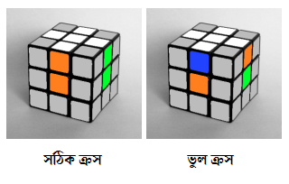

রুবিক্স কিউব মেলানোর সকল পদ্ধতিতেই এই অংশটি থাকে। কিন্তু মজার ব্যাপার হল এই অংশটির কোন নির্দিষ্ট নিয়ম নেই। অর্থাৎ আপনাকে রুবিক্স কিউব নিয়ে নাড়াচাড়া করতে করতেই এই অংশটা রপ্ত করতে হবে। আমরা এখানে সাদা অংশ দিয়ে শুরু করবো। তাই প্রথমে সাদা অংশের সেন্টার পিস খুঁজে বের করতে হবে এবং এর চারপাশের এজগুলো জায়গামত বসাতে হবে। তবে একটা ব্যাপার মাথায় রাখতে হবে যে, এজগুলোও যেন এদের নির্ধারিত জায়গায় বসে। চিত্রে দেখানো হলঃ
